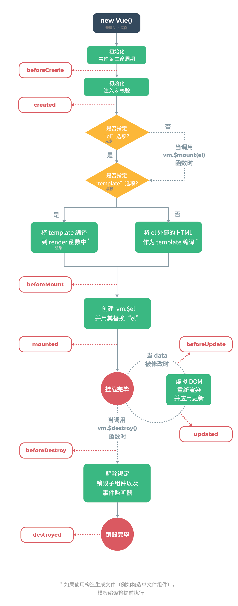

一 简介
1，什么是vue
Vue (读音 /vjuː/，类似于 view) 是一套用于构建用户界面的渐进式框架。所谓渐进式即是指我们可以通过Vue构建从简单到复杂的页面应用，并且Vue.js压缩文件只有33K，构建简单的页面不会显得臃肿，同时Vue构建的复杂页面也不会显得简陋。
Vue实现了DOM对象和数据的双向绑定，你不用直接操作DOM，这项工作完全由Vue来完成，你可以把更多的精力放到业务逻辑上来。
2，安装
Vue目前最新的版本是2.6.x。当然，Vue也提供了开发版和生产版两种文件。由于Vue使用了ECMAScript 5的特性，所以IE8及之前版本的浏览器不被支持。
Vue支持多种方式安装，<script>标签、CDN，CLI以及NPM。学习阶段建议使用MDN或本地引入。
如果你想构建大型应用，请使用NPM安装，方便配合webpack或类似的打包工具。如果你正在开发单页面应用（SPA），那么Vue提供的CLI工具可能是更好的选择。这两种方式请关注Vue官网。
1 //MDN
2 <script src="https://cdn.jsdelivr.net/npm/vue/dist/vue.js"></script>
3 //本地
4 <script src="js/vue.js"></script>
二 vue实例
1，创建Vue实例
通常，每个Vue的应用都是通过创建一个Vue实例开始的：
1 var vm = new Vue({
2 // some code
3 })；vm是ViewModel的缩写，许多文档或教程也使用app来接收返回的对象，这都无所谓了，你只要知道我们需要声明一个变量来接收Vue实例就行了。
在创建Vue实例时，你可以传递一个对象，这个对象包含了你可能要用到的数据、方法、Vue实例生命周期钩子等。稍后将一一讲解。
2，数据
当一个 Vue 实例被创建时，参数对象的data属性绑定的对象中的所有属性都被加入到 Vue 的响应式系统中。当这些属性的值发生改变时，视图将会产生“响应”，即修改为新的值。一般这会体现到HTML页面上。
1 var obj = {name: 'ren'};
2 var vm = new Vue({
3 data: obj
4 });
5 //你可以直接使用vm代替data来访问其绑定的对象属性（这里是obj.name）
6 obj.name = 'pen';
7 vm.name;//'pen'
8
9 vm.name = 'ken';
10 obj.name;//'ken'
11 //以上即可验证Vue的数据双向绑定需要注意的是，要想实现数据的双向绑定，在创建Vue实例之前，这些数据就应该已经被定义了。
1 //接上面的例子
2 obj.age = 12;
3 vm.age;//undefined另一个需要注意的点是Object.freeze()，该方法会冻结对象，阻止修改对象现有的属性，这就意味了Vue的响应式系统无法再对该对象起作用了。
1 var obj = {};
2 Object.freeze(obj);
3 var vm = new Vue({
4 data: obj
5 });
6 //这里vm和obj的双向绑定将失效除了数据属性外，Vue还提供了一些有用的实例属性和方法，他们都有前缀$，用以区分用户变量。
1 vm.$data === data;//true
2 vm.$el === document.getElementById();//true
3 vm.$watch();
4 vm.props;Vue还有很多其他的属性和方法，详情请看Vue实例属性。
3，方法
Vue在初始化的时候，我们还可以添加几个属性，methods、computed、watch。
1 var vm = new Vue({
2 el:'#app',
3 data:{
4 firstName:'',
5 lastName:''
6 },
7 methods:{
8 handler1:function(){},
9 handler2:function(){}
10 },
11 computed:{
12 fullName:fucntion(){
13 return this.firstName + ' ' + this.lastName ;
14 },
15 },
16 watch:{
17 fullName:function(){
18 console.log('The name has changed again');
19 }
20 }
21 });methods中一般定义一些事件处理函数，使用v-on指令绑定；computed中一般定义需要复杂计算才能的出的值；watch一般用于侦听某些可能发生的变化，比如例子中用于侦听fullName的变化，每当fullName发生变化，都会执行其绑定的函数。watch属性还可以监听像url地址这样的，无法通过原始DOM事件监听的东西。
4，生命周期
每个 Vue 实例在被创建时都要经过一系列的初始化过程。例如，需要设置数据监听、编译模板、将实例挂载到 DOM 并在数据变化时更新 DOM 等。同时在这个过程中也会运行一些叫做生命周期钩子的函数，这给了用户在不同阶段添加自己的代码的机会。下面列举了几个常用的生命周期钩子函数。
1 var vm = new Vue({
2 data:{},
3 //实例创建之前
4 beforeCreate:function(){},
5 //实例创建之后
6 created:function(){},
7 //实例挂载之前
8 beforeMount:function(){},
9 //实例挂载之后
10 mounted:function(){},
11 //数据更新之前
12 beforeUpdate:function(){},
13 //数据更新之后
14 updated:function(){}
15 });完整的Vue实例生命周期示意图：

Vue通过vm.el挂载指定DOM元素，挂载DOM元素实际上是用vm.$el替换原始的DOM元素。这样我们就可以通过只操作虚拟的DOM元素vm.$el，来实现操作真实的DOM对象的目的了。
1 var vm = new Vue({
2 el: '#app',
3 data:{}
4 });
5 //记住，el通过id定位元素
三 模板语法
1，插值
插值一般使用双大括号语法：{{ msg }}，中间添加变量名，这个变量一般是data或computed中的一个属性名。这样就可以实现HTML内容跟随变量变化了。
双大括号把内部的变量解析为文本，而通过v-html指令，可以使浏览器把变量解析为HTML代码。v-html有一个特点：它必须添加到一个HTML元素上，变量生成的HTML代码最终都以该元素为祖先元素。
1 <!-- 文本 -->
2 <div id="app">{{ name }}</div>
3 <!-- HTML -->
4 <div id="app">
5 <p v-html="html"></p>
6 </div>
7 <script>
8 var obj = {
9 name:'ren',
10 html:'<span style="color:red"></span>'
11 };
12 var vm = new Vue({
13 el:'#app',
14 data:obj
15 });
16 </script>{{ }}里面不仅可以填写简单的变量表达式，它同时也支持更为复杂的计算表达式。
1 <p>{{ number + 1 }}</p>
2 <p>{{ ok ? 'YES' : 'NO' }}</p>
3 <p>{{ message.split('').reverse().join('') }}</p>
2，指令及自定义
第一小节提到的v-html，和它类似的v-*什么的就时Vue提供的指令。比如，你可以通过v-once指令来实现一次性的插值，当数据改变时，插值处的内容不会再更新。
1 <div id="app" v-once>{{ name }}</div>再比如，你要给HTML元素添加属性，那么你可能会用到v-bind指令。
1 <div v-bind:class="myClass"></div>
2 <!-- 元素将被添加一个mycalss变量保存的值的类，同时，它也可以是一个稍复杂的计算表达式，如'my'+msg。如果你想移除该属性，你只需把null赋值给对应的变量 -->亦或是你要给HTML元素绑定事件，v-on指令可以帮你实现。
1 <a v-on:click="eventHandler">link</a>
2 <!-- eventHandler是事件处理函数 -->v-model指令可以双向绑定元素的value值与指定的变量。
1 <input type='text' name='name' v-model='name'></input>
2 ***********************************************
3 var vm = Vue({
4 data:{
5 name:'ren'
6 }
7 });
8 //输入框中的值会与vm.name同步指令的作用是当指令绑定的表达式的值改变时，将其产生的连带影响，响应式地作用于 DOM。
如果Vue提供的指令不够用，你还可以自定义Vue指令，用以实现某些特殊的功能。
1 // 注册一个全局自定义指令 `v-focus`
2 Vue.directive('focus', {
3 inserted: function (el) {
4 el.focus()
5 }
6 })方法的第一个参数是自定义的指令名称，第二个参数是一个对象，对象中可以是一些钩子函数，所有钩子函数的第一个参数固定是绑定的DOM元素，依据不同的钩子函数，还可以传递其他不同的参数。这些钩子函数将规定绑定了该指令的元素在不同时期内将要实现的功能。
上面的例子简单的创建了一个使DOM元素在插入HTML文档后自动获取焦点的指令。需要注意的是，定义指令名称时不需要v-前缀。更多关于自定义Vue指令的信息，请移步Vue自定义指令。
3，动态参数
如果你觉得上面的方式有失灵活，那么Vue的动态参数或许能够帮到你。Vue从2.6.0开始，允许你使用复杂表达式来定义指令最终的参数，不过你应该用[]方括号把它括起来。
1 <a v-bind:[attributeName]="url"> link </a>
2 <!-- 具体哪个属性会被添加，完全依赖方括号中的表达式的计算值 -->Vue指令还可以添加修饰符，使用 . 点来添加Vue指令的修饰符。例如.prevent，它告诉指令调用event.preventDefault()阻止事件默认行为。
1 <button v-on:submit.prevent="onSubmit">form</button>
2 <!-- 点击按钮时使用自定义函数，并通过.prevent阻止默认行为 -->其他指令也有相应的修饰符，接下来的学习中会慢慢接触到。
4，简写
对于使用频率极高的v-bind和v-on指令，Vue提供了简写形式。
1 <!-- 完整语法 -->
2 <a v-bind:href="url">...</a>
3 <a v-on:click="doSomething">...</a>
4 <!-- 缩写 -->
5 <a :href="url">...</a>
6 <a @click="doSomething">...</a>
7 <!-- 使用：冒号代替v-bind:，使用@替代v-on: -->
四 计算属性和侦听器
1，计算属性
模板内的表达式非常便利，但是设计它们的初衷是用于简单运算的。在模板中放入太多的逻辑会让模板过重且难以维护。
所以，如果需要经过复杂的逻辑才能得到最终的值，建议你使用Vue的计算属性。
1 var vm = new Vue({
2 el: '#app',
3 data: {
4 name: 'ren'
5 },
6 computed: {
7 reversedName: function () {
8 // `this` 指向 vm 实例
9 return this.name.split('').reverse().join('');
10 }
11 }
12 });
13 ********************************************************************
14 <div id="app">{{reversedNmae}}</div>
15 //计算属性专门用于处理数据计算，需要指定返回值
2，侦听器
侦听器的作用是动态的监测数据的变化。
1 <input type='text' name='name' v-model='name'></input>
2 *************************************************************
3 var vm = Vue({
4 data:{
5 name:''
6 }
7 watch:{
8 name:function(){
9 console.log(The name has changed again);
10 }
11 }
12 });
13 //每当vm.name属性发生改变时，控制台都会输出一条信息
五 class和style
操作元素的 class 列表和内联样式是数据绑定的一个常见需求。因为它们都是属性，所以我们可以用 v-bind 处理它们：只需要通过表达式计算出字符串结果即可。
不过，字符串拼接麻烦且易错。因此，在将 v-bind 用于 class 和 style 时，Vue.js 做了专门的增强。表达式结果的类型除了字符串之外，还可以是对象或数组。
1，绑定class
绑定class属性有两种方式，对象和数组。
首先是对象方式，请看下面的例子：
1 <div class='class0' v-bind:class="{class1:isclass1,class2:isclass2}"></div>
2 *********************************************************
3 data:{
4 isclass1:true,
5 isclass2:false
6 }
7 //通过data对象的isclass1和isclass2属性控制class1和class2是否被添加到div上，同时div上原来定义的class0不受影响如果需要操作的class列表很大，那么你可以在data里添加一个classObj对象，专门用来存储class控制变量。你当然也可以通过计算属性computed来动态的计算哪些class属性会被添加到div上。
1 <div v-bind:class="classObj"></div>
2 ******************************************************
3 //数据对象
4 data:{
5 classObj:{
6 isclass1:true,
7 isclass2:true
8 }
9 }
10 //计算属性
11 computed:{
12 classObj:function(){
13 return {
14 //既然使用计算属性，返回的对象应该是复杂计算得来的结果，由于只是举例，所以这里也只是简单的赋值了
15 isclass1:true,
16 isclass2:true
17 }
18 }
19 }除了对象绑定class属性外，Vue还提供了数组绑定的方式。
1 <div v-bind:class="[class1,class2]">
2 ***************************************
3 data:{
4 class1:'myClass',
5 class2:'yourClass'
6 }数组方式还支持动态的绑定class属性，这是通过三元运算实现的。
1 <div v-bind:class="[iscalss1 ? class1 : '' , isclass2 ? class2 ： '',class3]"></div>
2 *****************************************************************
3 data:{
4 isclass1:true,
5 isclass2:false
6 class3:'myClass'
7 }
8 //通过三元运算动态的绑定也可以和静态绑定组合使用
2，绑定内联样式
内联样式使用过HTML标签的style属性实现的，所以Vue同样使用v-bind指令来添加内联样式。
1 <div v-bind:style="{ color: myColor, fontSize: fontSize + 'px' }"></div>
2 ************************************************
3 data: {
4 myColor: 'red',
5 fontSize: 30
6 }注意，css属性名可以使用驼峰式或短横线分隔样式，若果使用短横线分隔方式，记得用引号把它引起来。
直接绑定一个样式对象通常更好，这会让模板更清晰，同时也可以和class一样，使用Vue的计算属性conputed动态生成。
1 <div v-bind:style="styleObject"></div>
2 *************************************************
3 data: {
4 styleObject: {
5 color: 'red',
6 fontSize: '13px'
7 }
8 }最后，绑定style属性也有数组语法，使用方式和绑定class的数组语法一样，这里不再赘述。
六 条件渲染
有时候我们可能需要在特定情况才需要渲染某些HTML元素，另外一些情况希望隐藏它，Vue提供了条件渲染的方式。
1，v-if
v-if指令根据绑定的条件，来决定是否渲染该元素。同时Vue还提供了另外两个指令：v-else-if和v-else，这让条件渲染变得更加灵活和强大。
1 <div v-if="answer === 'A'">A</div>
2 <div v-else-if="answer === 'B'">B</div>
3 <div v-else-if="answer === 'C'">C</div>
4 <div v-else>D</div>
5 ********************************************
6 computed:{ 7 answer:function(){
8 return answer;
9 }
10 //根据answer的值，决定渲染那个元素请注意，在同一个逻辑区域内，使用这三个指令的元素必须紧挨着，否者他们会失效。另外，v-else-if可以出现多次，而v-if和v-else只能在首尾各出现一次。
如果你想一次控制多个元素，那么你可以把条件指令作用到<template>元素上，最终的渲染结果将不包含<template>元素，而只包含其内部的元素。
1 <template v-if="ok">
2 <h1>Title</h1>
3 <p>Paragraph 1</p>
4 <p>Paragraph 2</p>
5 </template>
6 //当v-if接收到真值时，<template>元素不会出现在页面上，而h1和p会出现
2，v-show
v-show并不是真正意义上的条件渲染，它只是简单的操控元素的display属性，来达到显示或隐藏元素的目的。而v-if不仅保证元素隐藏，还能保证绑定的事件能被及时的销毁或重建。
1 <h1 v-show="ok">Hello!</h1>
2 <!-- 当ok为真值时，h1将被显示，否则将被隐藏 -->
七 列表
在Vue中渲染列表需要用到v-for指令。v-for可以通过数组或对象渲染列表。
1，数组渲染
1 <ul>
2 <li v-for="(value,index) in arr">{{index}}:{{value}}</li>
3 </ul>
4 **************************************************
5 data:{
6 arr:[1,2,3]
7 }
8 //value是元素，index是下标，下标是可选的参数你甚至可以显示一个数组经过过滤或排序后的版本，而不实际改变或重置原始数据。在这种情况下，可以创建一个计算属性，来返回过滤或排序后的数组。
1 <li v-for="n in newArr">{{ n }}</li>
2 ********************************************
3 data: {
4 arr: [ 1, 2, 3, 4, 5 ]
5 },
6 computed: {
7 newArr: function () {
8 return this.arr.filter(function (val) {
9 return val % 2 === 0;
10 })
11 }
12 }
2，对象渲染
1 <ul>
2 <li v-for="(value,name,index) in obj">{{parentMsg}}:{{index}}:{{value}}</li>
3 </ul>
4 **************************************************
5 data:{
6 parendMsg:'parent',
7 obj:{
8 name:'ren',
9 age:12
10 }
11 }
12 //结果：
13 //parent:0:ren
14 //parent:1:age
15 //value是属性值，name是属性名，index是序号（一般同Object.keys()的顺序），name和key都是可选的从上面例子可以看出，v-for指令不仅可以访问绑定的对象，还可以访问其父域内的变量。
3，渲染顺序
默认状态下，当绑定的数据项顺序被改变时，Vue不会主动的去修改已渲染的列表，如果要保证列表顺序始终与数据项一致，你应该给每一项的属性key提供一个唯一值，建议是数字或字符串等原始值。
1 <div v-for="(item,index) in arr" v-bind:key="index"></div>
2 <!-- 数组可以使用index，对象可以使用name -->
4，更新检测
我们知道，在JavaScript中，有很多方法可以修改数组和对象。但是，并不是所有的方法都能触发Vue的响应，即并不是所有的方法都能触发视图更新。
对于数组，Vue 不能检测以下数组的变动：
a：当你利用索引直接设置一个数组项时，例如：vm.items[indexOfItem] = newValue；
b：当你修改数组的长度时，例如：vm.items.length = newLength；
对于对象，Vue 不能检测对象属性的添加和删除。详情见本文2.2节。
幸运的是，Vue额外提供了vm.set方法来解决该问题。
1 //Vue.set(object, name, value);
2 var obj = {
3 name:'ren',
4 age:12
5 };
6 var vm = new Vue({
7 data:{
8 person:obj
9 }
10 });
11 vm.set(vm.person,'sex','male');
12 //新的sex属性是响应式的。需要注意的是，第一个参数必须是一个对象，即该data的属性应该绑定的是一个对象，才能使用该方法。
八 表单
上面3.2小节简单介绍的v-model指令，这里将详细介绍表单与它的关系，及用法。
1，文本绑定
1 <!-- 单行文本 -->
2 <input v-model="message">
3 <p>Message is: {{ message }}</p>
4 <!-- 多行文本 -->
5 <p>{{ message }}</p>
6 <textarea v-model="message"></textarea> 请注意：在文本区域插值： <textarea>{{text}}</textarea>，这样并不会生效，应该使用 v-model 来代替。
2，单选
1 <input type="radio" id="one" value="One" v-model="picked">
2 <label for="one">One</label>
3 <br>
4 <input type="radio" id="two" value="Two" v-model="picked">
5 <label for="two">Two</label>
6 <br>
7 <span>Picked: {{ picked }}</span>
8 *****************************************************
9 data:{
10 picked:''
11 }
3，复选
1 <input type="checkbox" id="jack" value="Jack" v-model="checkedNames">
2 <label for="jack">Jack</label>
3 <input type="checkbox" id="john" value="John" v-model="checkedNames">
4 <label for="john">John</label>
5 <input type="checkbox" id="mike" value="Mike" v-model="checkedNames">
6 <label for="mike">Mike</label>
7 <br>
8 <span>Checked names: {{ checkedNames }}</span>
9 *****************************************************
10 data:{
11 checkNames:[]
12 }
13 <!-- 如果只有一个复选项，那么不使用数组会更方便 -->
4，下拉列表
1 <select v-model="selected">
2 <option disabled value="">请选择</option>
3 <option>A</option>
4 <option>B</option>
5 <option>C</option>
6 </select>
7 <p>Selected: {{ selected }}</p>
8 ************************************************
9 data:{
10 selected:''
如果下拉列表式多选的，你可以给<select>标签增加一个multiple属性，并且selected属性需要绑定一个数组。
请注意，如果你希望页面第一次载入时默认选中某一项，那么你应该给selected属性设置该默认值。
你也可以使用v-for指令，动态的渲染下拉列表的选项。
1 <select v-model="selected">
2 <option v-for="option in options" v-bind:value="option.value">
3 {{ option.text }}
4 </option>
5 </select>
6 <p>Selected: {{ selected }}</p>
7 *****************************************************
8 data: {
9 selected: 'A',
10 options: [
11 { text: 'One', value: 'A' },
12 { text: 'Two', value: 'B' },
13 { text: 'Three', value: 'C' }
14 ]
15 }
5，修饰符
v-model指令的本质是监听用户输入事件，然后自动选取正确的方式来更新元素。v-model为不同的元素使用不同的属性、监听不同的事件。
value 属性和 input 事件；checked 属性和 change 事件；value 作为 prop ，并将 change 作为事件。 请注意：v-model 会忽略所有表单元素的 value、checked、selected 特性的初始值，而总是将 Vue 实例的数据作为数据来源。所以，你应该通过 JavaScript 在组件的 data 选项中声明初始值。
我们知道，默认情况下，v-model对text使用input事件，你可以通过修饰符lazy使Vue对其使用change事件；
如果想自动将用户的输入值转为数值类型，可以给 v-model 添加 number 修饰符；
如果要自动过滤用户输入的首尾空白字符，可以给 v-model 添加 trim 修饰符；
1 <!-- 在“change”时而非“input”时更新 -->
2 <input v-model.lazy="msg" >
3 <!-- 直接得到Number类型值 -->
4 <input v-model.number="age" type="number">
5 <!-- 获得首位没有空白字符的值 -->
6 <input v-model.trim="msg">
九 事件
v-on指令用来监听DOM事件，并在事件触发时执行一些JavaScript代码。
1，用法
1 <button v-on:click="counter += 1">Add 1</button>
2 <p>{{ counter}}</p>
3 ************************************************
4 data:{
5 counter:0
6 }虽然v-on指令可以直接绑定JavaScript语句，但要实现稍复杂逻辑，使用Vue方法才是更好的选择。
1 <button v-on:click="greet($event)">click me</button>
2 ************************************************
3 var vm = new Vue({
4 el:'',
5 data:{
6 name:'ren'
7 },
8 methods:{
9 greet:function(event){//event：原生DOM事件对象
10 alert(this.name);//this：当前Vue实例,这里是vm
11 }
12 }
13 });方法也可以直接用JavaScript调用：vm.greet()；
2，事件修饰符
在事件处理程序中调用 event.preventDefault() 或 event.stopPropagation() 是非常常见的需求。尽管我们可以在方法中轻松实现这点，但更好的方式是：方法只有纯粹的数据逻辑，而不是去处理 DOM 事件细节。
为了解决这个问题，Vue.js 为 v-on 提供了事件修饰符。之前提过，修饰符是由点开头的指令后缀来表示的。
.stop 阻止事件冒泡 .prevent 阻止默认行为 .capture 使用捕获事件 .self 事件源对象 .once 仅执行一次的事件处理器 .passive 不阻止默认行为，会使.prevent失效事件修饰符是可以链式使用的，不过需要注意他们的顺序：
1 <!-- 阻止事件冒泡和默认行为，然后执行一些操作 -->
2 <a v-on:click.stop.prevent="doSomthing"></a>
3 <!-- 阻止事件冒泡和默认行为，不执行其他操作 -->
4 <form v-on:submit.prevent></form>
3，系统修饰符
可以用如下修饰符来实现仅在按下相应按键时才触发鼠标或键盘事件的监听器。
.ctrl .alt .shift .meta （IOS的command 键，Windows的Win键）1 <!-- Alt + C -->
2 <input @keyup.alt.67="clear">
3 <!-- Ctrl + Click -->
4 <div @click.ctrl="doSomething">Do something</div>一个特别的修饰符：.exact，它用于精确的指定组合按键以触发相关事件。
1 <!-- 只要ctrl键被按下就会触发，不管有无其他按键 -->
2 <button @click.ctrl="onClick">A</button>
3 <!-- 有且只有 Ctrl 被按下的时候才触发 -->
4 <button @click.ctrl.exact="onCtrlClick">A</button>
5 <!-- 没有任何系统修饰符被按下的时候才触发 -->
6 <button @click.exact="onClick">A</button>
4，鼠标修饰符
鼠标修饰符只有3个：.left、.right、.middle。这些修饰符会限制处理函数仅响应特定的鼠标按钮。
1 <!-- 只响应左键 -->
2 <button @click.left="onClick">A</button>
3 <!-- 只响应右键 -->
4 <button @click.right="onClick">A</button>
5 <!-- 只响应中键 -->
6 <button @click.middle="onClick">A</button>
5，按键码及自定义按键修饰符
按键码keyCode的事件用法已经被废弃了，之后新版的浏览器可能将不再提供支持，并且IE9及之前的按键码和其他主流浏览器有一些差别，所以请慎重使用按键码。
Vue提供了常用了按键码别名：
.enter .tab .delete (捕获“删除”和“退格”键) .esc .space .up .down .left .right这些别名能在必要的时候为老版的浏览器提供支持，如果上述按键不足以满足你的需求，那么你可以通过自定义按键别名。
1 // f1为自定义的按键别名，112为按键码；你可以使用 `v-on:keyup.f1`来捕获f1键
2 Vue.config.keyCodes.f1 = 112;
关于Vue.js的基础应用就先介绍到这儿，下一次更新将带来Vue的核心：组件。